Welcome to Chikoria — your Chiki is waiting
A living 3D voxel world on Solana where your $CHIKI hold hatches a creature that walks beside you. Explore a hand-built island, battle the corruption with real card duels, craft, fish, ride, trade with other players — and get paid real $CHIKI for finishing the story. Sign in with a free, gas-less wallet signature (never a transaction, never your keys).
Hold 500k $CHIKI and tap your egg — a hidden lucky number makes it LEGENDARY. Whales (1M+) nest a second egg.
Ability-card duels vs corruptimons, PvP anywhere in the world, and the Chikoria Cup with a SOL prize.
14 resources, 130 recipes, 10-level tools, 8 fish + 4 sea legends, 6 mounts, and a player Trading Post.
ACT I · MASTER OF CHIKORIA — 21 chapters that pay real on-chain $CHIKI. See the REWARDS tab.
Tooltips in English · 日本語 · 中文, a rotating island soundtrack with a music switch, and three graphics tiers so any laptop or phone can run it.
The realm is building itself behind this page — you'll be standing before the castle in a moment.
🏆 Play the story. Win real $CHIKI.
All 21 chapters carry a real $CHIKI reward — 100,000 $CHIKI per player across the full campaign.
The arena tournament crowns a champion with a SOL prize from the pool.
Completions are validated server-side and reviewed before payout — on-chain, verifiable on Solscan.
Champion slots are first-come. Every chapter you clear today is a head start.
Two purses: the COIN POUCH holds in-game coins from dailies & side quests (press Collect). The REWARD VAULT holds your real story-quest $CHIKI — track it in the LEDGER tab; payouts release from the pool automatically, no signature, no gas.
Ten crowns. One island. The Everflame remembers who answered first.
🐾 The ChikiDex — 21 species. Which will choose you?
Ten elemental lines, five ancient Legendaries, and the six-strong Meme Dynasty. Your first egg hatches on a tap — press it on a hidden lucky number and a LEGENDARY answers. Every chikimon levels to 50, learns up to 12 ability cards, and grows a personality shaped by how you treat it.
 MushrowPlant
MushrowPlant ElectroxLightning
ElectroxLightning JelloxOcean
JelloxOcean FirixFlame
FirixFlame OwzardIce
OwzardIce ForestleMountain
ForestleMountain DrolaxShadow
DrolaxShadow HealixCrystal
HealixCrystal SolarixWind
SolarixWind ScorplexCosmic
ScorplexCosmic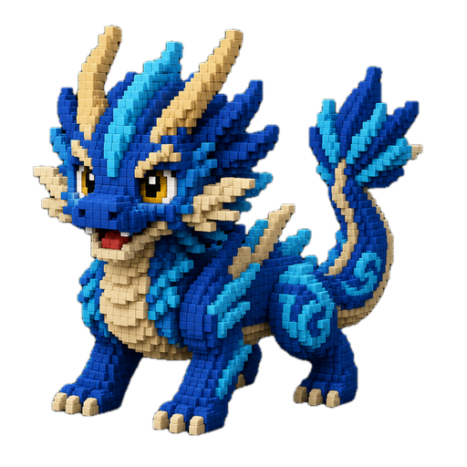
GaladorLegendary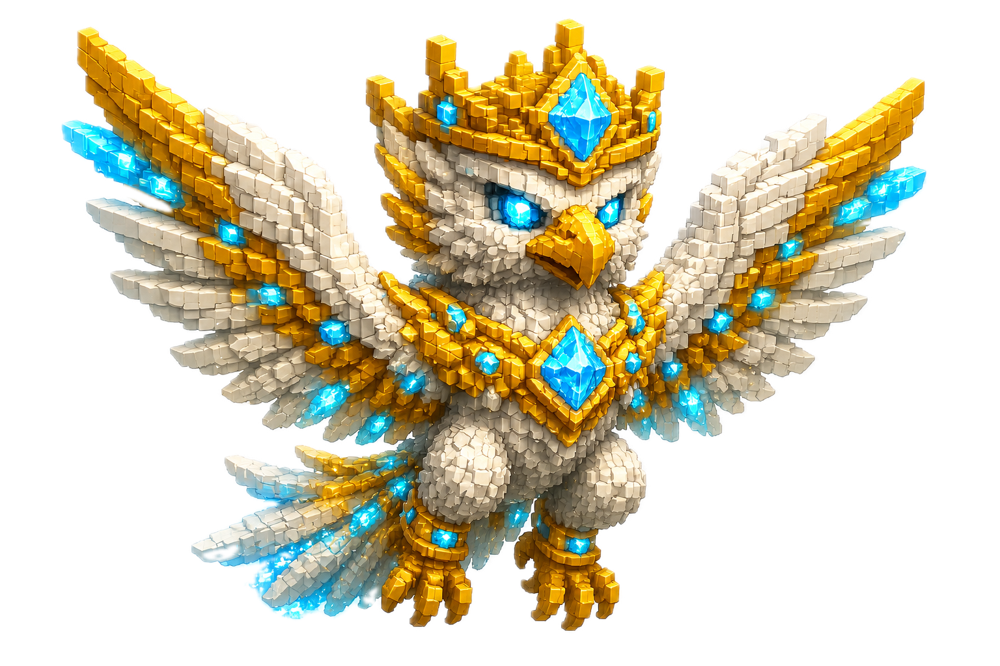
AdalorLegendary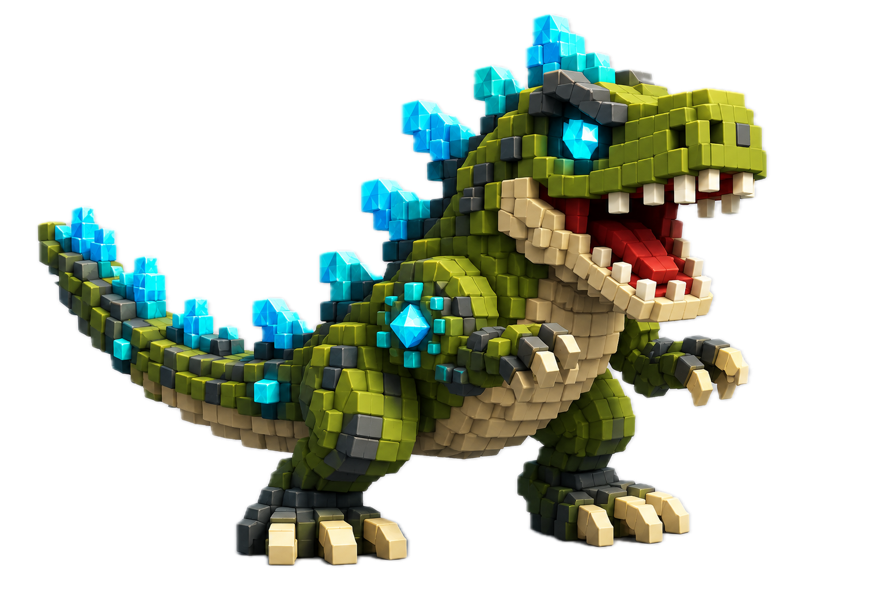
TyrannosLegendary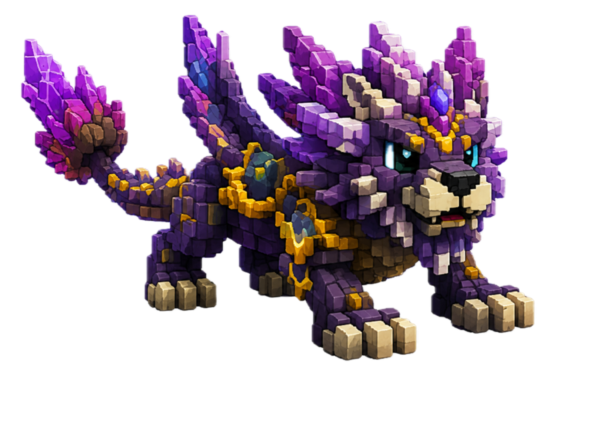
GrovadorLegendary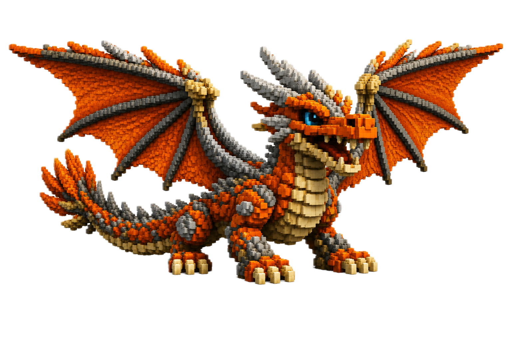
DragonosLegendary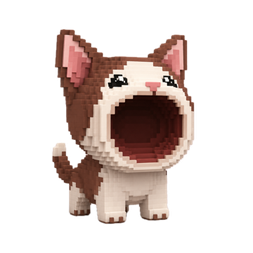
PopcatMeme Dynasty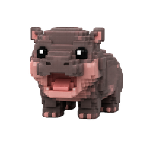
MoodengMeme Dynasty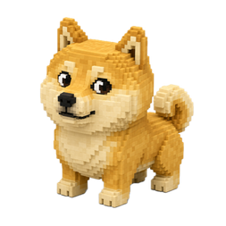
DogeMeme Dynasty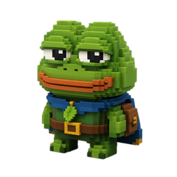
PepeMeme Dynasty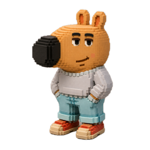
ChillguyMeme Dynasty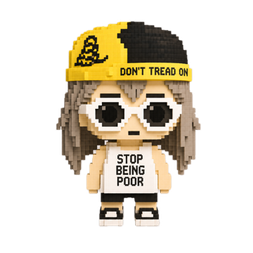
AlonFounder's Meme🎮 How to Play
- Sign in with Phantom — a free, gas-less message signature proves the wallet is yours (never a transaction; we never ask for private keys or seed phrases). Hold ≥500k $CHIKI and tap your egg to hatch (a hidden lucky number wins a Legendary!).
- Mouse-first movement — click the ground to walk there; HOLD the button ~¼s and you break into a RUN that steers after your cursor (release to finish the trip). WASD · Shift · Space still work · right-drag looks · wheel zooms.
- On phones — pick which way you'll turn your phone and the whole realm plays sideways (wallet browsers can't rotate, so we rotate FOR you). Bottom-left joystick moves, quick-tap walks, drag looks, pinch zooms.
- Press E to gather trees, rocks, ores and more · craft tools at the Craft Shop to gather much faster — every gather is exactly ONE item, for everyone.
- Press P for your menu — quests, satchel, team, mounts, avatar and gear. The System tab in Chat keeps a timestamped log of every notification you missed.
- Battle corruptimons with your chikimon's ability cards (1–4 to play, R ends the turn, V auto) · spar trainers with G · enter the Chikoria Cup at the Chikiseum.
- Fish for eggs — eggs can't be bought: the four fantasy fish are the only way Mithra conjures new chikimon, mounts, legendaries and Meme Dynasty eggs. Better rods hook deeper legends.
- Follow the campaign — ACT I · MASTER OF CHIKORIA, 21 real-reward chapters (63 total), paying real $CHIKI from the reward pool.
- Trade with players at the Trading Post — real on-chain $CHIKI: you keep 75% of every sale, 20% refills the reward pool, 5% burns forever. Receipts with Solscan links in the 🧾 Sales tab.
- Top-left buttons — graphics tier, language (EN / 日 / 中) and music, remembered on your device.
Care for your team
Chikimons have HP, stamina, hunger and moods — feed them, let them rest, heal free at the Hospital, and bond with them to unlock their personalities.
You'll learn all of it in your first ten minutes — then everything you own, you'll earn out in the world.
⚒ Choose your calling — every role earns
Chikoria is a real economy: every resource is player-gathered, every listing is player-made, and real $CHIKI flows to the ones who play their role well. Pick a calling — or mix them all.
Press E at trees, bushes, hives, shells and flowers. Craft the axe → drill ladder (10 levels each) to harvest far faster, then sell stacks at the Trading Post — 75% of every sale is yours, settled on-chain.
Stone, iron, gold and crystal wait in the three great mines around the mountain. Ores gate the deepest recipes — a miner with gold to spare never goes poor.
Track free-roaming pigs and boars for pork, beef and hide — hide gates every storage craft in the game. Cull corruptimons to keep the roads safe and your team levelled.
44 named fishing spots, three richness tiers, a reel-tension duel per catch. The four fantasy fish are the only source of eggs in Chikoria — anglers mint the future. Sell spares to collectors.
130 recipes: tools, rods, potions, food, gear to Lv 10. Fighters need Healing Draughts, riders need Trail Fodder — brew what the island needs and name your price.
Card duels vs corruptimons, friendly spars with any trainer (G), and the Chikoria Cup with a SOL prize. Win streaks multiply your rewards — protect them with a Streak Sigil.
Work the Trading Post: buy low from grinders, list smart, watch the Sales tab receipts land on Solscan. 75% seller · 20% reward pool · 5% burned — every trade feeds the economy.
Six mounts (the Skywing Griffin flies), 63 story chapters, lore beacons at five sealed landmarks, and the richest fishing waters unmarked on any map. Someone has to find them first.
21 chikimon, 10 avatar cases (1-of-10 each), the capped Meme Dynasty, 6 mounts, 12 fish. The dex pop-ups track live mint counts — completion is the longest game in Chikoria.
The story pays $CHIKI. The roles pay each other. The island pays attention.
🗺 Everflame Isle — the Heart of Chikoria
The island with the castle now bears its name on the charts: Everflame Isle, where Chikiville's walls guard the last burning light.
The walled city — shops, the Hospital, the Trading Post and the Everflame.
Grimwick broods on the mountain peak above the clouds.
Gold, iron and crystal lodes ring the mountain.
Fishing docks, the Harbormaster — and the Wandering Galleon at anchor.
The grand arena outside the west gate — home of the Chikoria Cup.
44 named fishing spots — rare fantasy fish swim the deep water.
🌪 ACT II · THE WANDERING GALLEON — the ship at the harbor sets sail to a brand-new region across the mist in a future update. Founders will know the isle by heart before it does.
💎 $CHIKI Tokenomics
1,000,000,000 $CHIKI on Solana — launched on pump.fun.
500,000 $CHIKI to enter the realm · 1M+ whales nest a second egg.
Campaign chapters pay real $CHIKI from the reward pool.
View $CHIKI on Solscan ↗
Mint: CPYrgdAYWFQD74ZtsR8mEBWW7qnrXnegcn7gDMobpump
💬 Join the Community
Catch 'em! Train 'em! Bond forever! Thousands of trainers are already registered — the leaderboard, the Cup brackets and the champion race all live in the community.